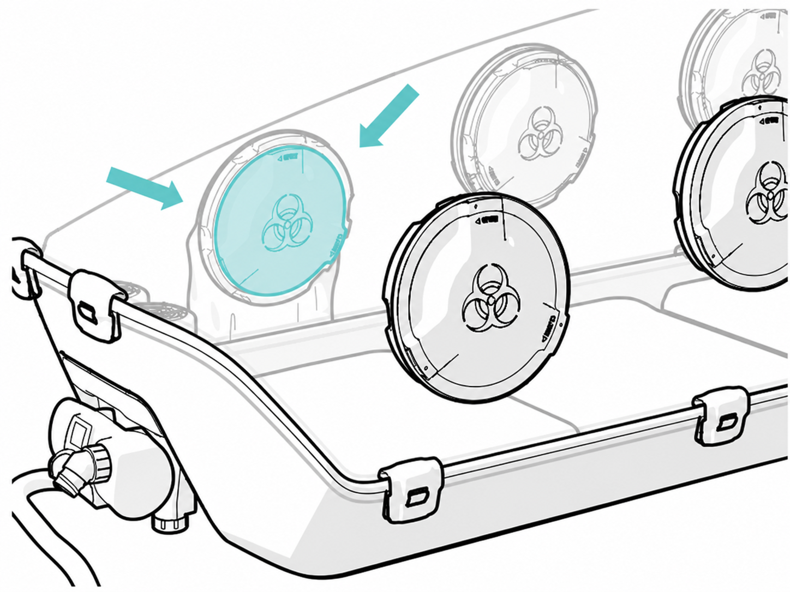
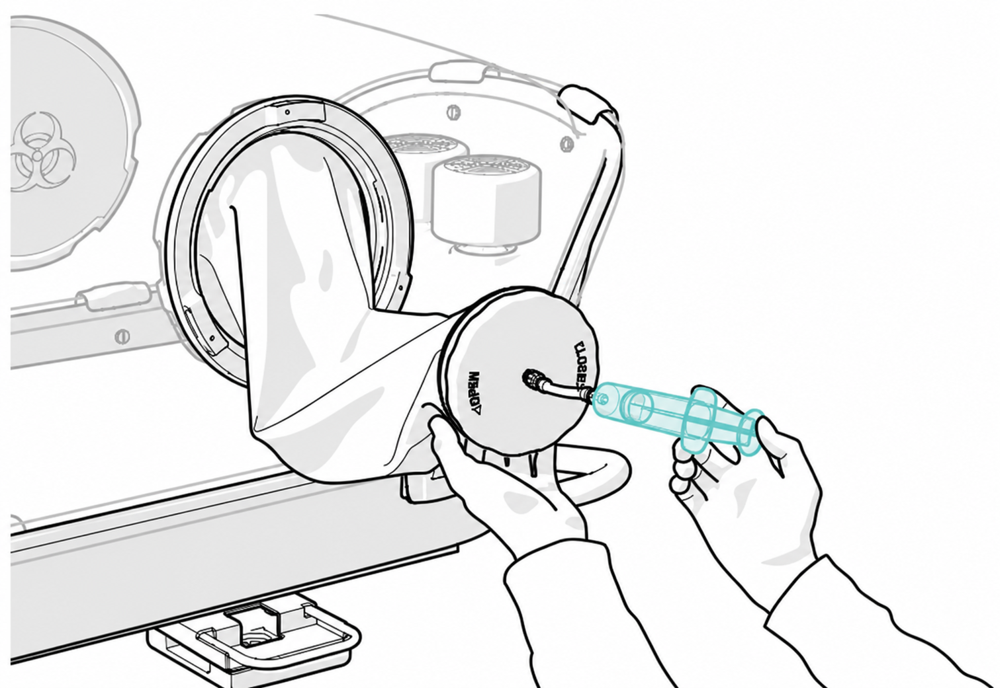
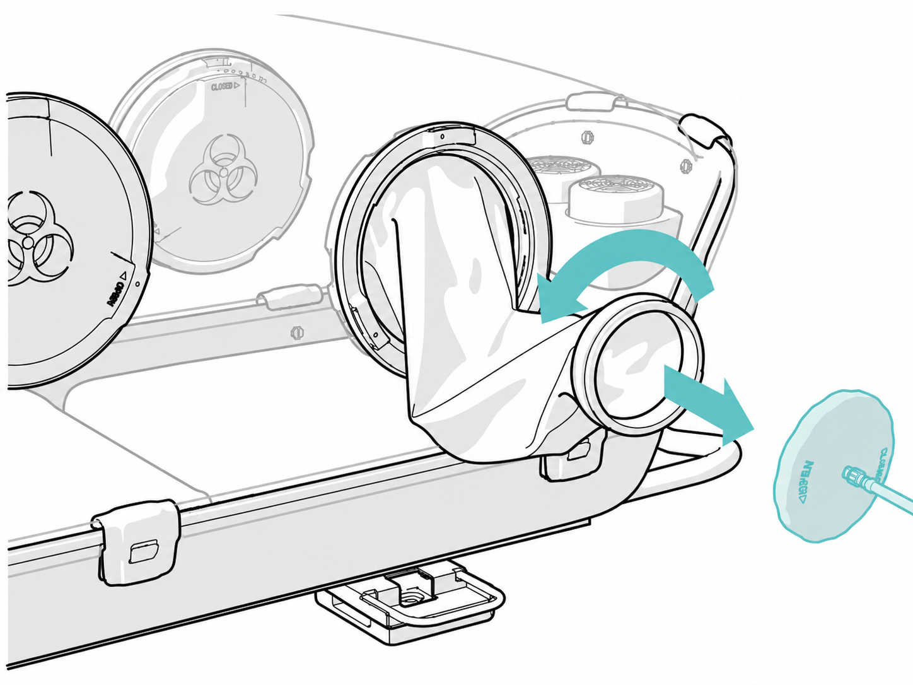
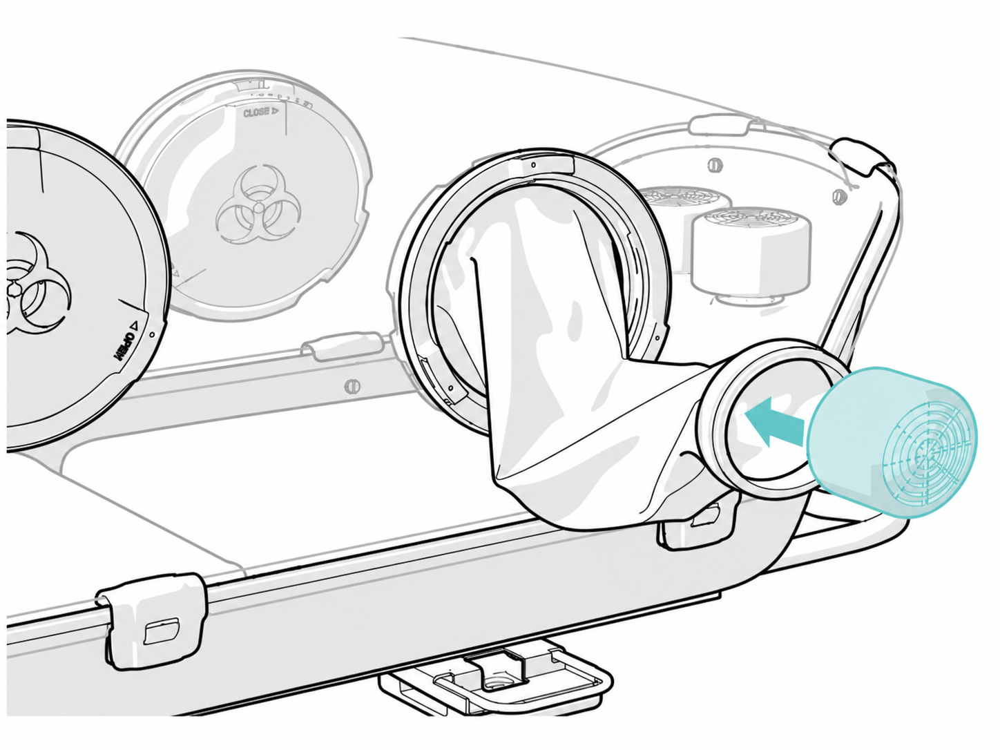
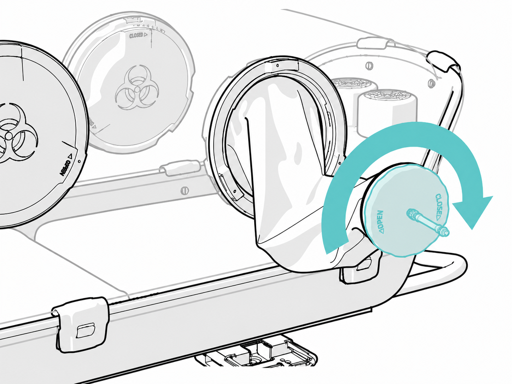
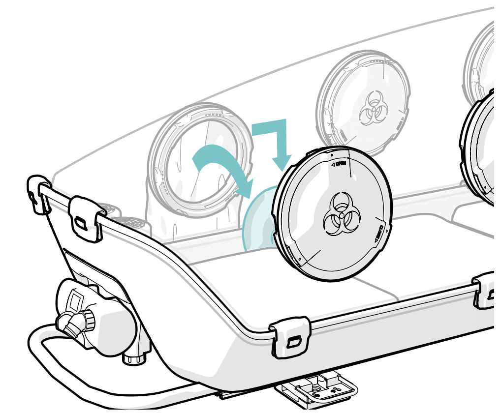
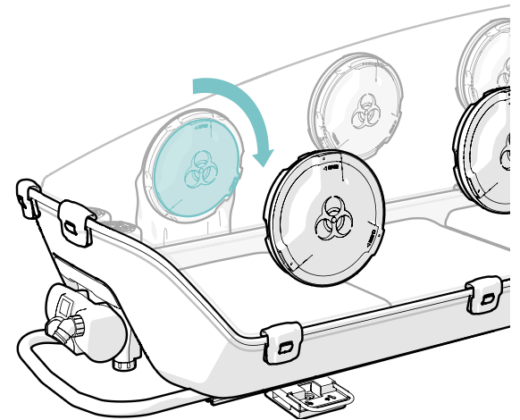

EpiPort 200
Utilisation du sac d'écluse
IMPORTANT
Afin de transférer un objet dans l'EpiShuttle en toute sécurité en présence du patient, il est nécessaire d'utiliser le sac d'écluse prévu à cet effet.
Lors de la première utilisation, et seulement si la trappe intérieure n'a jamais été ouverte en présence du patient, il ne sera pas nécessaire de procéder à la décontamination primaire du sac d'écluse avant d'introduire l'objet voulu.
À l'inverse, si la trappe intérieure a déjà été ouverte, il sera obligatoire de procéder à une décontamination du sac d'écluse (trappe intérieure fermée) comme décrit dans la procédure ci-dessous.
1
Vérifier la bonne fermeture de la trappe interne.

2
Procéder à une décontamination de l'intérieur du sac d'écluse avec 50 ml d'Oxivir Excel Foam®, puis attendre le délai d'action requis (Virucide EN14476 : 5 min à 2 % ou 30 sec à 4 %).

3
Ouvrir le couvercle du sac d'écluse prévu à cet effet.

4
Insérer l'objet voulu (ex : filtre interne).

5
Refermer le couvercle du sac d'écluse avant le transfert.

6
Ouvrir la trappe interne du sac d'écluse, puis introduire l'objet dans l'EpiShuttle.

7
Refermer la trappe intérieure pour sécuriser le sac d'écluse.

8